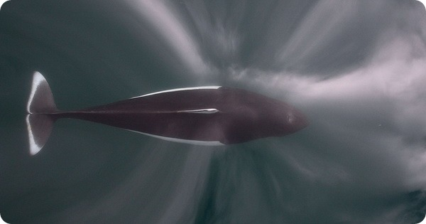

Мы впервые встретились с марсилианами («марцылиана», марцилияна), когда читали записки стольника Петра Андреевича Толстого. Тогда же пообещали подробнее рассказать об этих судах. А тут как раз представился подходящий повод: упоминание этого корабля у Кристофоро да Канала.
В главе 4 известного труда капитана галер папского государства Пантеро Пантера «L'armata nauale» (1614), озаглавленной De i vascelli, che si vfano hoggi nel mar Mediterraneo, & nell'Oceano («О кораблях, которые используются в настоящее время на Средиземном море и в Океане») мы читаем:
Le vrche & le marsiliane sono l’vna & l'altra quasi d’vna istessa forma: sono differenti dalle naui per la prora, che portano, più grossa, & più rotonda, ristringendosi dalla metà del vascello in dietro sino alla poppa. Sono minori delle naui, & de i galeoni, ne vsano più di sette vele: sei quadre, & vna latina: hanno due coperte, & portano doi mille & cinquecento sin’a tre millia salme di peso, ò poco più.
Урки и марсилианы имеют почти одинаковую форму: они отличаются от навы своей носовой частью, более вместительной, более крупной и более округлой, которая начинает сужаться от середины корабля к корме. Они меньше навы и галеона, используют только семь парусов: шесть прямых и один латинский. Имеют две палубы, могут поднимать от 2150 до 3000 салм груза, и даже немного больше.
L'armata nauale, del capitan Pantero Pantera (1614), p.42
(Заметим попутно, что наш известный автор второй половины позапрошлого века Н.П. Боголюбов, видимо, ошибся при переводе этого отрывка, приводя в своей книге «История корабля» значение грузоподъемности марсилианы «от 1500 до 2000 салм».)
Не исключено, что это описание Пантеро Пантеры побудило известного эрудита-полиглота, историографа французского флота Огюстена Жаля выдвинуть свою гипотезу о происхождении термина марсилиана:
Nous inclinerions à penser que la Marsiliana prit un nom en rapport avec sa forme, qui la rapprochait du Marsouin, Marsione. Marsione aura pu devenir Marsiana et Marsiliana. Le détail que donne sur la construction de la Marsiliane le passage de Pantero-Pantera qu'on va lire semble favoriser notre hypothèse, que nous présentons, au reste, avec une grande défiance.
Мы склонны считать, что марсилиана получила имя из-за своей формы, которая напоминает форму морской свиньи (фр. Marsouin), Marsione. Marsione могла превратиться в Marsiana и Marsiliana. То описание корпуса марсилианы, которое приведено в отрывке из Пантеро Пантеры, похоже, подтверждает нашу гипотезу, которую я представляю, правда, с большой осторожностью.
A.Jal, Glossaire Nautique, 1848
Вот она, морская свинья, (Phocoenidae, из подотряда зубатых китов)

Действительно похоже на марсилиану, как она представляется из описания Пантеро Пантеры. Только корабль весом поболее будет. Хотя трудно с точностью до килограмма определить грузоподъемность этого корабля. Значение салмы – единица этой грузоподъемности – меняется от района к району (в соответствующем справочнике список этих значений занимает более десятка страниц), и что в точности имел в виду капитан папских галер, обозначая величину грузоподъемности от 2150 до 3000 салм, – сказать трудно. Но ориентировочную цифру привести можно. Одна салма (salma) при ее употреблении в морском деле XVI века (per determinare la portata utile di una nave) равняется трем кантарам (cantaro), каждая из которых – 150 тяжелым фунтам (libbre grosse). Учитывая, что тяжелый фунт «весит» по-разному в разных районах Италии, то каждая кантара «тянет» от 47,65 кг в Генуе до 79,34 кг в Палермо. Известный итальянский словарь Треккани находит компромиссное значение салмы – около 238 кг. Таким образом, грубо значение грузоподъемности составит от 500 до 700 тонн; такого же порядка будет и водоизмещение марсилианы.
Вернемся к гипотезе Жаля относительно происхождения названия марсилианы от морской свиньи. К сожалению, здесь нам придется разочароваться в лексикографическом чутье французского историографа. В итальянском языке морская свинья называется focene, или, иногда, porco-marino, но никак не marsouin или marsione. Это последнее уходит корнями в датское или шведское marsvin (морская свинья), может быть с промежуточным голландским meerswijn, но никак не в латынь, из которой ее могли бы воспринять итальянцы. Так что эту красивую гипотезу приходится забраковать.
Завершим этот пост еще несколькими соображениями относительно происхождения термина марсилиана. Итальянец Формалеони связывает это слово (в орфографическом варианте marciliana) с merci (товары), но следов этого процесса в словарях той эпохи найти не удалось. Не подтверждена и гипотеза, связывающая происхождение этого слова с названием французского Марселя (Marseilles) (Guillet (1678) и Zanetti (1758)), который был, якобы, основным портом назначения торговых венецианских марсилиан; здесь тоже не удается свести концы с концами: марсилианы появились в документах Венеции еще тогда, когда их маршруты были ограничены акваторией северной Адриатики. Приходится с сожалением отправить термин марсилиана в тот же сундук, где пылятся многие и многие морские слова, происхождение которых покрыто туманом времени.
Мы не привели здесь ни одной картинки марсилианы: достоверных изображений не сохранилось. Анализ же изображений, которые могли быть навеяны обликом этих кораблей, мы проведем в следующий раз.